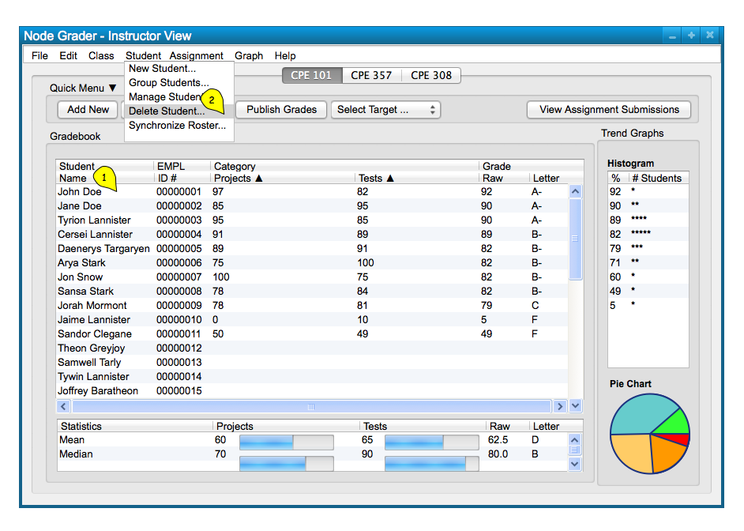
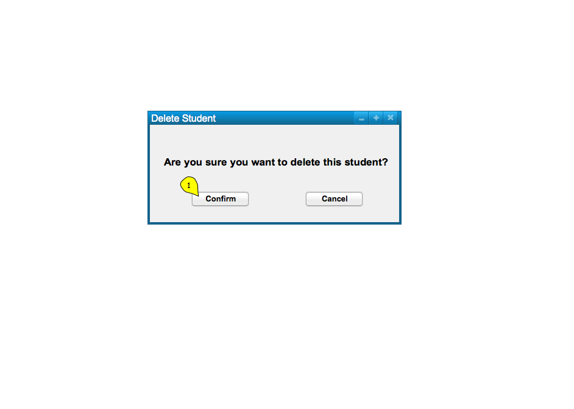
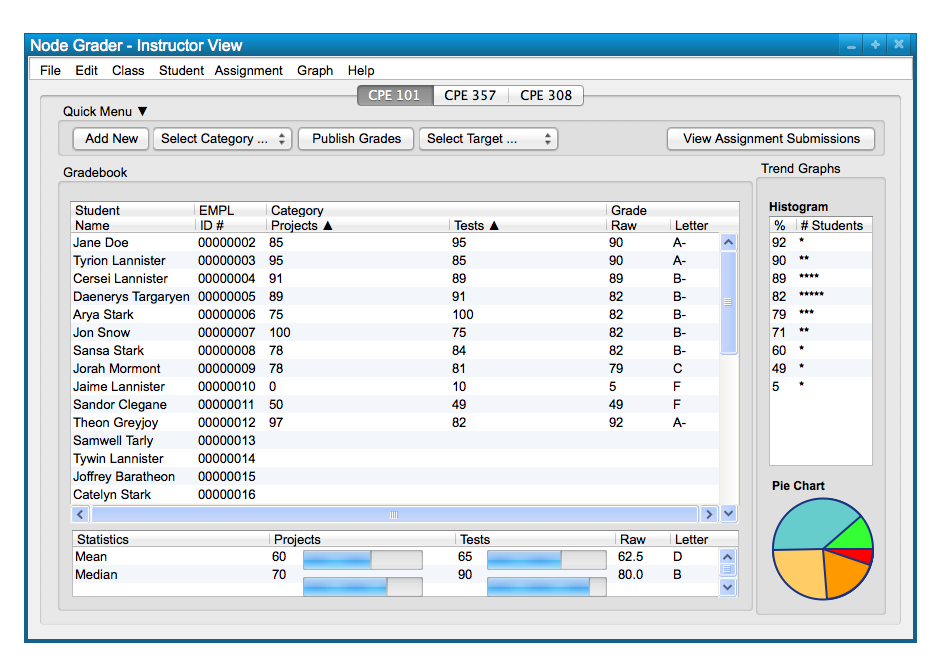

In this scenario, we take a look at how a user deletes a student from the class, via the 'Student' menu commands.
Deleting a student is useful to remove students from a class spreadsheet that they have dropped, or are being dropped from,
for whatever reason. Figure 1 shows a sample class ready to delete a student.
Figure 1: Sample Class.
To delete a student, the user clicks on the student's row of data in the class spreadsheet. This
results in the student being highlighted. The user chooses the 'Student' menu
command. A list of options appears and the user chooses 'Delete Student' to
remove the student from the class; this takes the form of the following, Figure 2.

Figure 2: Delete Student path.
The dialog for selecting the path above is a confirmation for the user that they want to confirm deltion of the student they have selected. Selecting "Cancel" removes the dialog box without making any changes. Selecting "Confirm" deletes the previously selected student, and all of their corresponding data, from the class spreadsheet. This dialog is shown in Figure 3.

Figure 3: Delete Student dialog.
The result of confirming student deletion is simply the class spreadsheet displayed with the student's data removed from it; this is shown in Figure 4.

Figure 4: Delete Student Class result.
Repeating these functions for deleting students allows a user to delete as many students as they want, simply
by clicking on the student and using the delete commands.